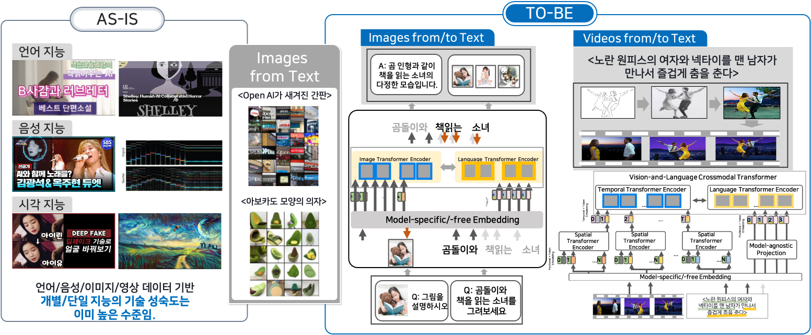

효율적 사전학습이 가능한 크로스모달 대형 모델 사전학습 기술개발
연구기간: 2022.08 ~ 2025.12



기술문의: 이용주 시각지능연구실장 (yongju@etri.re.kr), 임수종 박사(lsj@etri.re.kr)
연구내용
단계별 연구내용
연구실적(논문/학술대회)
[International Journals]
[International Conferences]
[Domestic Journals]
[Domestic Conferences]
[Preprint]
Acknowledgement
This work was supported by the Institute of Information & communications Technology Planning & Evaluation(IITP)
grant funded by the Korea government(MSIT)
(No. RS-2022-00187238, Development of Large Korean Language Model Technology for Efficient Pre-training)